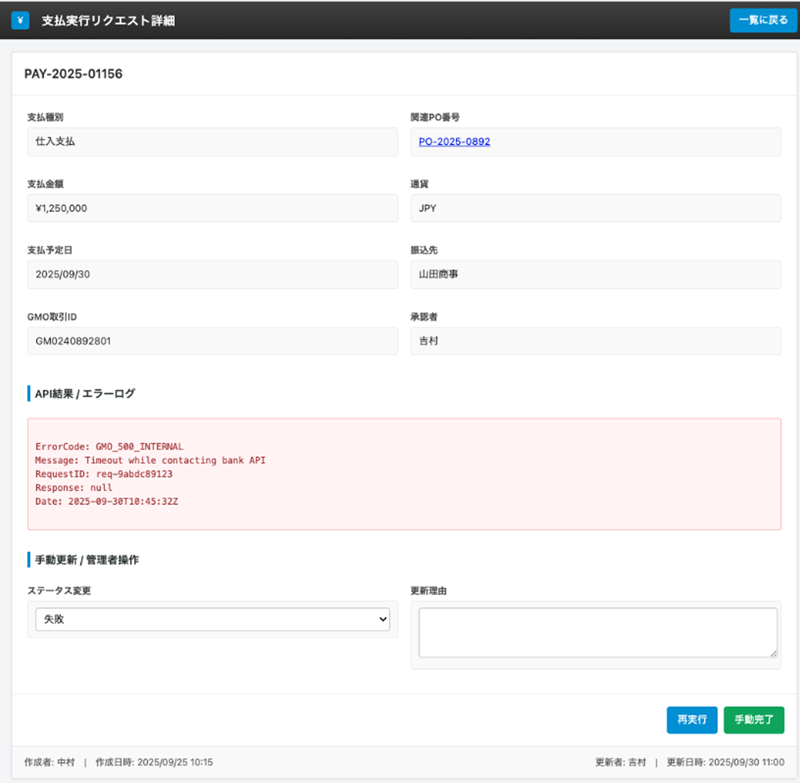
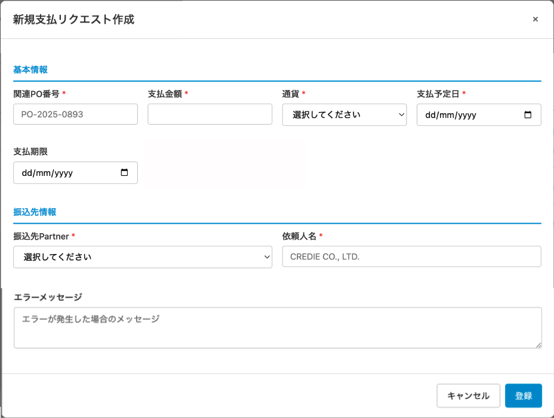

UI Screen Specification – 支払実行リクエスト管理
対象画面: 支払実行リクエスト一覧 / 支払実行リクエスト詳細
想定利用者: 経理担当、ファイナンス担当、CEO（承認者）、システム管理者
1. 画面の目的（Purpose）
支払実行リクエスト管理アプリは、Credie から外部パートナーへ行う 銀行振込支払の「実行依頼」を一元管理するための画面です。
- 支払対象: コミッション報酬、投資家への配当、サプライヤーへの仕入支払など。
- GMO ペイメントゲートウェイの振込 API と連携し、承認済みリクエストを自動で銀行振込実行する。
- CEO 承認ワークフロー、通貨管理、ステータス管理、エラー時のリトライと通知を提供する。
2. ユーザーストーリー（User Stories）
2.1 経理担当（Finance）
- 月次処理で、仕入先・エージェンシー・投資家への支払データが AP / Rewards / Dividend モジュールから集計される。
- 各レコードについて、本アプリに「支払実行リクエスト」が 自動作成 される。
・ステータス：待機中（承認待ち）
・支払種別・支払金額・通貨は、元アプリ（PO / Rewards / Dividend）から連携され、画面上は参照のみ（編集不可）。 - レコード作成と同時に、システムが CEO に承認依頼メールを自動送信するため、経理担当は「メール送信」の操作を行わない。
- 経理担当の役割は、一覧で状況をモニタリングし、エラーや失敗ステータスが出た場合に原因調査・再処理を行うこと。
2.2 CEO / 承認者
- CEO は受信した「支払承認依頼メール」から対象レコードへのリンクをクリックして詳細画面を開く。
- 支払種別・金額・振込先・支払予定日を確認し、問題なければ「承認」ボタンを押下する。
- 承認後：
・レコードの「承認者」に CEO の氏名が自動セットされる。
・承認日時を記録（監査用）。
・ステータスは待機中のままだが、「承認済みフラグ = ON」として GMO 実行条件を満たす。
2.3 システム（バッチ / Webhook）
- 一定間隔で、「承認済みフラグ=ON」「ステータス=待機中」「支払予定日≦本日」のレコードを抽出し、GMO 振込 API を実行する。
- 成功した場合は GMO取引ID を保存し、ステータスを「完了」（必要に応じて一時的に「実行中」）へ更新。
- エラーの場合はステータスを「失敗」に更新し、Error Log アプリに詳細を記録。
さらに Finance 向けに自動通知メールを送信する。
3. 機能概要（Functions）
- 支払実行リクエストレコードの一覧表示・検索・フィルタ
- 支払種別（仕入支払 / 配当支払 / コミッション支払など）の管理（元アプリ連携）
- 支払予定日・通貨・金額の確認
- CEO 承認者の記録と「承認済みフラグ」による GMO 実行制御
- GMO 取引 ID と実行ステータス（待機中 / 実行中 / 完了 / 失敗）の管理
- レコード作成時の CEO 自動通知メール送信
- 支払失敗時の Finance 自動通知メール送信
- CSV エクスポート、および詳細画面からのリトライ操作（詳細仕様は別途）
4. 画面レイアウト（Layout & Flow）
4.1 支払実行リクエスト一覧画面
本一覧は、振込支払の実行リクエストを 1 行 1 レコードで表示する。
経理・CEO が「どの支払がいつ、どこへ、いくら支払われるか」を俯瞰するための画面。
経理・CEO が「どの支払がいつ、どこへ、いくら支払われるか」を俯瞰するための画面。
| 項目名 | 説明 |
|---|---|
| 支払ID |
振込リクエストの一意な ID。例: PAY-2025-001156。クリックすると支払リクエスト詳細画面へ遷移する。 形式: 年度＋連番。ログ・監査追跡に使用。 |
| 支払種別 |
支払の種類を表す区分。 例: 仕入支払（サプライヤー）、配当支払（投資家）、 今後 コミッション支払 などを追加予定。 元アプリで決定され、本画面では参照のみ（編集不可）。 |
| 関連PO番号 |
仕入支払の場合に紐づく PO 番号（例: PO-2025-0892）。リンククリックで PO 詳細画面を開く。 配当・コミッション等 PO に紐づかない場合は - 表示。
|
| 支払金額 |
振込予定の金額。例: ¥1,250,000, ¥680,400, $15,800。元アプリから連携され、本画面では編集不可。通貨は別フィールドで管理。 |
| 通貨 |
支払に使用する通貨。Phase 1 のメインは JPY だが、海外仕入・投資家向けに USD 等も許容。 通貨コードとして保持し、本画面では JPY, USD などで表示。編集不可。
|
| 支払予定日 |
振込実行予定日。 バッチ実行では「支払予定日≦本日」でかつ承認済みのレコードのみを対象に GMO API をコールする。 キャッシュフロー調整のため、Finance による編集を許可。 |
| 振込先 |
支払先名称（例: 山田商事、東京流通センター、Marusho運送、健康アフィリエイト など）。 実際の銀行口座情報は Partner / Supplier マスタ側に保持し、本画面では名寄せ済みの表示名のみを表示。 |
| 承認者 |
当該支払を承認した CEO（または権限者）の氏名。 未承認の場合は空欄または -。GMO API 実行条件として「承認者がセットされていること」を必須とする。 |
| ステータス |
支払実行処理の現在ステータス。代表的な状態：
|
| GMO取引ID |
GMO 側で発行される取引 ID。例: GMO240928001。成功・失敗に関わらず、GMO とやり取りしたトランザクションがある場合は ID を保持し、 GMO 管理画面での検索キーとして利用。 |
4.1.1 一覧画面のツールバー
- ビュー選択（全支払）: 「全支払」「今月支払」「失敗のみ」などのビューを定義。
- 通貨フィルタ（全通貨）: JPY のみ / USD のみ など、通貨別に絞り込み。
- ステータスフィルタ（全ステータス）: 待機中 / 実行中 / 完了 / 失敗 で絞り込み。
- 検索ボックス: 支払ID・振込先・承認者などを対象とした全文検索。
- CSV エクスポート: 現在のビュー結果を CSV で出力。
- ＋ 支払リクエスト: 例外的に手入力で支払リクエストを作成するためのボタン（通常は自動生成）。
4.1.2 一覧画面スクリーンショット

図1. 支払実行リクエスト管理 一覧画面
4.2 運用フロー（システム＋CEO 承認＋通知）
本フローは、支払データ生成 → CEO 承認 → GMO 実行 → 結果通知までを自動化することを目的とする。
-
① 支払データ生成（自動）
・AP / Rewards / Dividend などから支払データを集計し、本アプリにレコードを自動作成。
・初期値：ステータス =待機中、承認者 = 空欄、承認済みフラグ = OFF。
・支払種別・支払金額・通貨は元アプリから連携され、読み取り専用として保持。 -
② CEO への承認依頼メール送信（自動）
・レコード作成直後、システムが CEO に承認依頼メールを自動送信する。
・件名例：[Credie] 支払承認依頼 – PAY-2025-001156
・本文には 支払ID / 支払種別 / 金額 / 支払予定日 / 振込先 のサマリと、当該レコードの URL を記載。
・メールテンプレートには System Setting の「CEO approval request」を利用。 -
③ CEO 承認
・CEO はメール内のリンクから詳細画面を開き、内容を確認して「承認」ボタンを押下。
・承認時：
– 承認者フィールドに CEO 氏名をセット。
– 承認日時を記録。
– 承認済みフラグ = ON。
・必要に応じて「差戻し」ボタンを実装し、コメントを残して元アプリ側で修正 → 再生成という運用も想定。 -
④ GMO 振込 API 実行（バッチ・自動）
・バッチが定期的に以下条件でレコードを抽出：
– 承認済みフラグ = ON
– ステータス =待機中
– 支払予定日 ≦ 本日
・該当レコードごとに GMO 銀行振込 API をコール。
・成功レスポンス：GMO取引ID を保存し、ステータスを完了に更新。
・処理中の場合は一時的に実行中を使用してもよい。 -
⑤ 失敗時の自動通知（Finance 向け）
・API エラー・タイムアウトなどで失敗した場合：
– ステータス =失敗に更新。
– Error Log アプリにエラーコード・メッセージ・対象支払ID を記録。
– Finance / 経理ロール向けに自動メール通知を送信：
件名例：[Credie] 支払実行失敗 – PAY-2025-001156
本文：支払ID、支払種別、金額、振込先、GMO取引ID（あれば）、失敗理由、レコードURL。
・メールテンプレートには System Setting の「Payment failed」を利用する想定。
4.3 フィールド編集可否ポリシー
| フィールド | 編集可否 | 備考 |
|---|---|---|
| 支払種別 | 画面上：編集不可 | 元アプリ（PO / Rewards / Dividend）から連携。変更が必要な場合は元アプリ側で修正し、再連携する。 |
| 支払金額 | 画面上：編集不可 | 同上。Payment アプリ上で金額を変更すると元データと不整合になるため、必ず元アプリで修正する。 |
| 通貨 | 画面上：原則編集不可 | 元データに準拠。特別な例外運用が必要な場合は別途ルール化。 |
| 支払予定日 | 編集可 | Finance がキャッシュフロー調整のために変更可能。 |
| 振込先 | 通常：編集不可 | Partner / Supplier マスタから連携。例外的に修正が必要な場合は運用ルールに従う。 |
| 備考 | 編集可 | 一時対応メモや特記事項を記載する自由記述欄。 |
4.4 支払実行リクエスト詳細画面
一覧から支払IDをクリックした際に表示される詳細画面。
振込内容の確認、API 結果の確認、ステータスの手動更新および再実行指示を行う。
振込内容の確認、API 結果の確認、ステータスの手動更新および再実行指示を行う。
4.4.1 基本情報ブロック
画面上部は 2 カラム構成で、一覧と同じ項目をより詳細に表示する。
| 項目名 | 説明 / 編集可否 |
|---|---|
| 支払ID |
レコードのタイトルとして画面先頭に表示（例: PAY-2025-01156）。自動採番。編集不可。 |
| 支払種別 |
例: 仕入支払・配当支払・コミッション支払。 元アプリから連携される値であり、詳細画面でも編集不可。 |
| 関連PO番号 |
仕入支払の場合の紐づく PO 番号（例: PO-2025-0892）。リンククリックで PO 詳細画面を別タブで開く。編集不可。 |
| 支払金額 |
振込予定金額。3 桁カンマ付きで表示（例: ¥1,250,000）。元アプリで確定した金額であり、編集不可。 |
| 通貨 |
通貨コード（例: JPY / USD）。 元アプリから連携。編集不可。 |
| 支払予定日 |
振込実行予定日（例: 2025/09/30）。 Finance による変更を許可（キャッシュフロー調整目的）。 |
| 振込先 |
支払先名称（例: 山田商事）。Partner / Supplier マスタ由来。 通常は編集不可。例外的な修正は運用ルールに従う。 |
| GMO取引ID |
GMO 側で発行される取引 ID（例: GMO240892801）。GMO API 実行後にシステムが自動セットする。編集不可。 |
| 承認者 |
CEO 等の承認者名（例: 吉村）。 承認ボタン押下時に自動セットされる。編集不可。 |
4.4.2 API結果 / エラーログブロック
「API結果 / エラーログ」セクションは、GMO 振込 API のレスポンス内容をテキストで表示する読み取り専用エリア。 失敗時は赤背景で強調表示する。
- 表示例：
ErrorCode: GMO_500_INTERNAL Message: Timeout while contacting bank API RequestID: req-9abdc89123 Response: null Date: 2025-09-30T10:45:32Z - 成功時はサマリ情報または「Success / 正常終了」を表示する想定。
- 詳細な JSON は Error Log アプリ側に保持し、本画面では人が読める程度の要約を表示する。
4.4.3 手動更新 / 管理者操作ブロック
GMO API 実行後の例外対応や再実行指示を行うための管理者向け操作領域。
| 項目名 | 説明 |
|---|---|
| ステータス変更 |
ドロップダウンでステータスを手動変更できるフィールド。候補値：待機中 / 実行中 / 完了 / 失敗 / 手動完了 など。 通常フローではシステムが自動更新するが、例外対応で「失敗 → 待機中（再実行予定）」「失敗 → 手動完了」などを選択可能。 編集権限は管理者・Finance のみに制限。 |
| 更新理由 |
ステータスを手動変更する際の理由を記載するテキストエリア。 例: 「銀行窓口で手動振込済みのため手動完了に変更」「GMO 側一時障害のため再実行指示」。 監査・トレーサビリティのため、手動変更時は入力必須としてもよい。 |
4.4.4 アクションボタン
- 再実行（ボタン）
・対象レコードのステータスが「失敗」の場合に表示・有効。
・クリックすると、GMO 振込 API を 再度実行 する処理をトリガーする。
・実行前に確認ダイアログ（例：「この支払を再実行します。二重振込にならないことを確認してください。」）を表示。
・再実行結果は 4.2 のフロー⑤と同じくステータスとエラーログに反映される。 - 手動完了（ボタン）
・GMO API を介さず、銀行窓口や別システムで振込を完了したケースで使用。
・クリックすると、ステータスを手動完了に変更し、更新理由の入力を求める。
・この操作では GMO API は呼び出されず、GMO取引ID も更新しない。
4.4.5 監査情報
画面下部には Kintone 標準の監査情報が表示される。
- 作成者 / 作成日時（例: 作成者: 中村, 作成日時: 2025/09/25 10:15）
- 更新者 / 更新日時（例: 更新者: 吉村, 更新日時: 2025/09/30 11:00）
- これらは編集不可であり、内部監査や問題発生時の追跡に利用する。
4.4.6 詳細画面スクリーンショット

図2. 支払実行リクエスト 詳細画面
4.5 新規支払リクエスト作成ダイアログ
自動生成された支払リクエストとは別に、例外対応やテスト、スポット支払などのために、
手動で支払実行リクエストを作成するための入力ダイアログ。
通常は経理・管理者のみが使用する。
4.5.1 入力項目
| 項目名 | 説明 / バリデーション |
|---|---|
| 関連PO番号＊ |
手動作成する支払が特定の PO に紐づく場合の PO 番号。 ・入力方式：テキスト＋サジェスト、または PO 選択ダイアログからの選択。 ・必須。PO に紐づかない支払（例：雑費、特別ボーナス等）は、別運用とするか 「その他」モジュール側から生成する想定。 ・存在しない PO 番号を入力した場合はエラー。 |
| 支払金額＊ |
手動で指定する支払金額。 ・必須。0 以下は不可。 ・数値のみ。通貨は「通貨」フィールドで指定。 ・自動作成フローと同様に 3 桁カンマ付きで表示。 |
| 通貨＊ |
支払に利用する通貨。ドロップダウンから選択。 ・候補：JPY / USD（Phase 1）。 ・必須。支払金額とセットで保持。 |
| 支払予定日＊ |
GMO 振込を実行したい予定日。カレンダーから選択。 ・必須。過去日は原則不可（特別な運用が必要な場合は別途検討）。 ・バッチがこの日付を基準に実行対象を抽出する。 |
| 支払期限 |
取引先との合意上の支払期限。表示・管理用の任意項目。 ・未入力可。 ・将来的に「支払遅延のアラート」などに利用可能。 |
| 振込先Partner＊ |
振込先となる Partner（Supplier / Agency / Investor など）。 ・必須。Partner マスタからのプルダウン選択。 ・選択された Partner に紐づく銀行口座情報を内部的に利用し、GMO API の口座パラメータを生成する。 |
| 依頼人名＊ |
振込人名義として銀行側に表示される名称。 ・初期値： CREDIE CO., LTD.（System Setting で変更可能）。・必須。通常は編集不可でもよいが、海外送金等の事情により変更が必要な場合は、権限を制限した上で編集可とする。 |
| エラーメッセージ |
前回実行時に発生したエラー内容を表示するフィールド。 ・新規作成時は空。 ・GMO API 実行時にエラーが発生した場合、システムが自動でメッセージを書き込む。 ・ユーザーは編集不可（読み取り専用）。 |
4.5.2 ボタン動作
- 登録
・必須項目（関連PO番号 / 支払金額 / 通貨 / 支払予定日 / 振込先Partner / 依頼人名）がすべて入力されているかをチェック。
・バリデーション OK の場合、支払実行リクエストレコードを新規作成し、ステータス =待機中、承認者 = 空欄、承認済みフラグ = OFF で保存。
・保存後、一覧画面に戻り、4.2 のフロー②に従って CEO へ承認依頼メールが自動送信される。 - キャンセル
・ダイアログを閉じ、何も保存しない。
4.5.3 作成ダイアログ スクリーンショット

図3. 新規支払リクエスト作成ダイアログ
5. ビジネス影響（Business Impact）
- CEO 承認を必ず経由しつつ、承認依頼メールを自動送信することで、大口送金や不正送金リスクを削減しながら、運用負荷を最小化できる。
- 支払種別・通貨・チャネル別に支出が可視化され、投資家配当・コミッション・仕入コストの管理が容易になる。
- GMO API による自動振込で、経理の手作業を大幅に削減し、入力ミス・振込漏れを防止できる。
- 失敗時の自動通知により、問題発生から対応開始までのタイムラグを最小化できる。
6. Scope / Out of Scope
6.1 Scope
- 支払実行リクエストのマスタ管理（作成・参照・ステータス更新）
- CEO 承認者の記録と承認済みフラグによる GMO 実行制御
- レコード作成時の CEO 自動通知メール送信
- GMO 振込 API の実行トリガーとなるデータセットの提供
- 実行ステータス（待機中 / 実行中 / 完了 / 失敗）の管理
- 支払失敗時の Finance 自動通知メール送信
6.2 Out of Scope
- 銀行口座情報そのものの管理（Partner / Supplier マスタで管理）
- GMO 側の管理画面での操作・設定
- 為替レート計算や FX リスク管理（必要であれば別モジュールで対応）
7. 開発メモ（Dev Notes）
- 支払ID はユニーク制約をかけ、他モジュールから参照しやすい形式（プレフィックス＋年度＋連番）とする。
- レコード作成トリガーで、CEO 向け承認依頼メールを自動送信するロジックを実装する（System Setting のテンプレート「CEO approval request」を使用）。
- GMO API 呼び出し結果が「失敗」となった場合、Finance ロール向けに自動メール通知を送信する（テンプレート「Payment failed」を利用）。
- 支払種別・支払金額・通貨は UI では読み取り専用にし、更新は必ず元アプリ経由とする。
- GMO API 呼び出し結果は Error Log アプリにも記録し、トレース可能なようにする。
- 多通貨に対応できるよう、金額＋通貨コードをセットで持ち、表示時のみフォーマット済み文字列を生成する。
- 将来的な複数ゲートウェイ対応を見据え、GMO 固有の項目は
gmo_*のようなプレフィックスを付けて実装する。